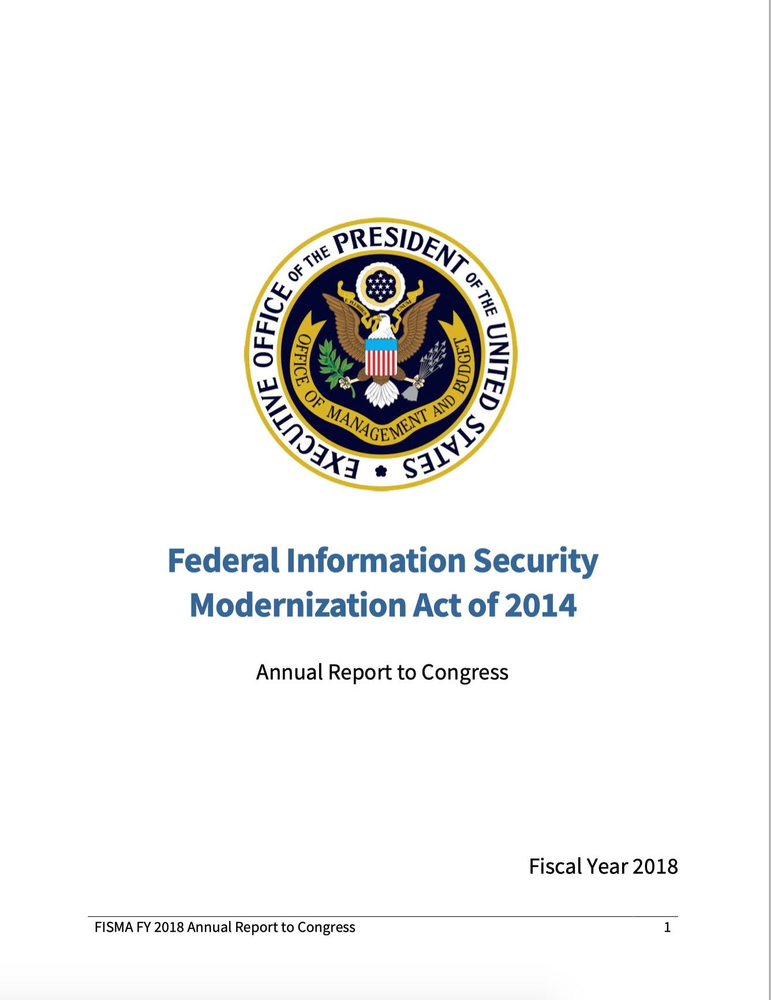
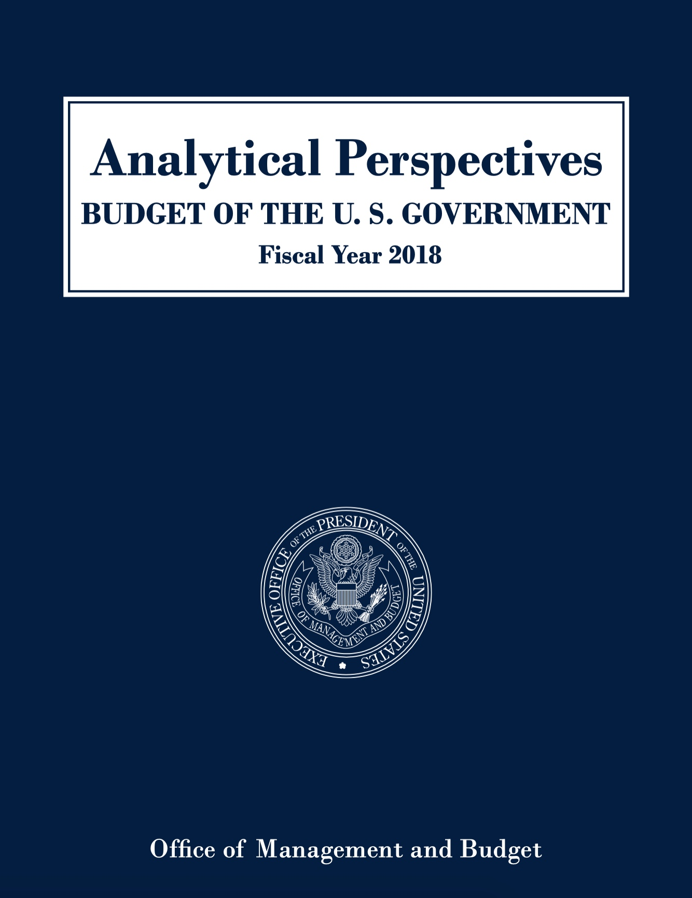
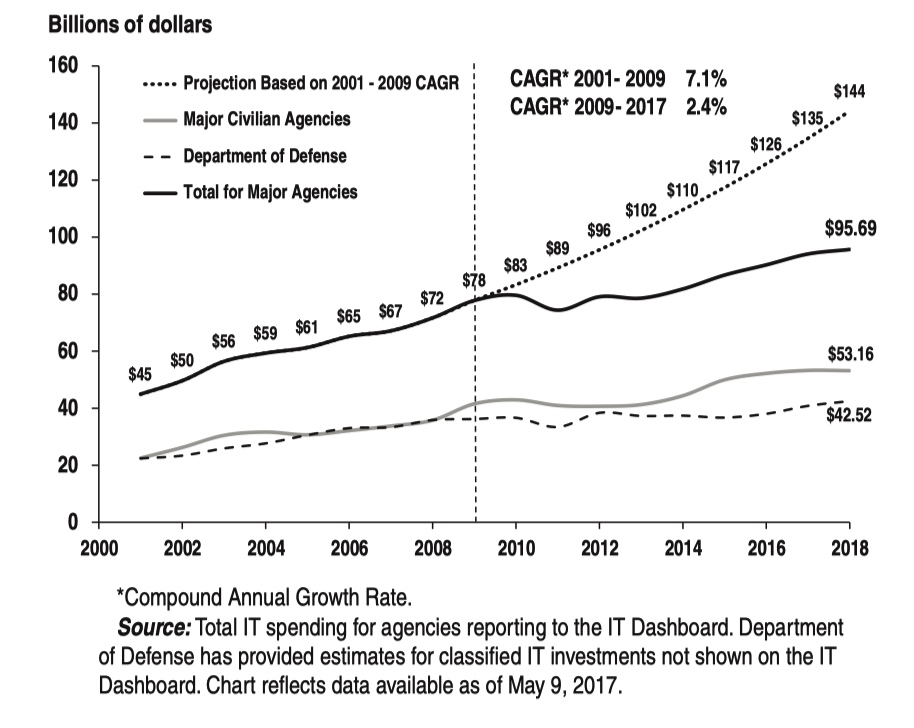
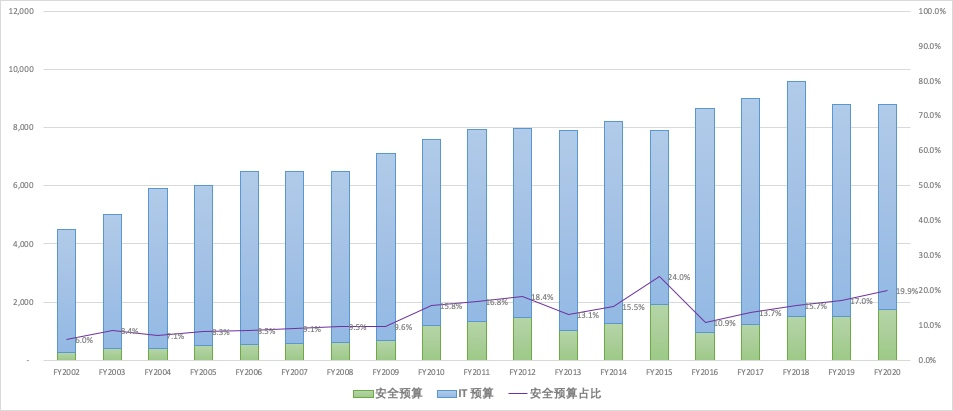
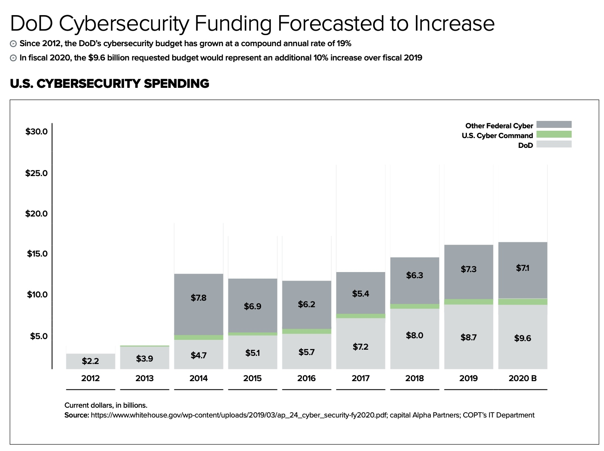

2002-2019 年美国 IT 和网络空间安全预算
随着“十四五”规划的临近，各行各业都准备做新的规划了。对于安全行业来说，在规划阶段最常见的问题就是：需要多少预算，有什么依据？
不管是 IT 领域，还是安全领域，美国一直是我们的学习的对象。关于“钱”的问题一直是比较复杂的（预算、决算、统计口径、……），我把自 2002 年以来美国联邦政府所有公开的报告进行了分析，把预算口径（而非其他）的数据拿出来，供大家在回答安全预算相关的“灵魂拷问”时参考。
有任何反馈，欢迎大家在此进行评价：https://docs.qq.com/doc/DWENacmZ0VXppYldt
一、美国联邦政府 IT 和网络空间安全预算
最近整理了一下美国 IT 预算和网络空间安全预算相关的一些数据。因为美国非常重视社会统计数据，所以各方面不同部门、不同目的产生的统计数据非常丰富。数据跟踪分析对数据最基本的要求是统一口径。在美国联邦政府体系中时间最长，最权威的数据是自 2002 年以来由白宫一直持续披露的 **FISMA 年度报告（Federal Information Security Modernization Act of 2002/2014 Annual Report to Congress）和每年由总统签署的年度预算的分析视角报告分册（Analytical Perspectives, Budget of the United States Government）**中披露的数据。两份报告都是白宫向国会提交的正式报告，其中 FISMA 年度报告可以说是美国每年政府视角的总结报告，都非常具有权威性。而且这两份报告持续时间都非常长，统计口径也基本一致，更准确地体现美国政府在 IT 领域和网络空间安全领域投资的特点。

1.1 汇总数据
在 FY2018 的预算报告里面可以看到美国政府在 FY2001-FY2009 期间有有一段 CAGR=7.1% 的 IT 投资高速增长期，在 FY2009 年之后则进入了 CAGR=2.4% 的“新常态”。这样的特征不仅仅体现在联邦政府非涉密、非军用的领域，在美国国防部的 IT 预算也有同样的特征。但与之明显相对的是，网络空间安全的投资无论是比例还是增速都非常明显的高于 IT 投资的平均水平。FY2015 年推动“国家网络空间安全行动计划”（CNAP：Cybersecurity National Action Plan）增加大量网络空间安全预算达到 24.1% 这个惊人的比例。而 FY2020 年，民用机构的 IT 投资预算从 458 美元亿下降到 367 亿美元，而网络空间安全投入却从 FY2019 的 65 亿美元增长到 78 亿美元，占比也达到惊人的 21% 。


- 表格中预算的单位为“亿美元”
- “部分”是指除美国国防部（DoD）和涉密以外的部分
- FY2005～FY2007 年 FISMA 报告有少量数据对不齐
- FY2010 年美国联邦预算更新了会计规则，数据更全面（统计口径有变化）
- FY2015 年推动“国家网络空间安全行动计划”（CNAP：Cybersecurity National Action Plan）增加大量网络空间安全预算。
- FY2019 之前的安全预算数据主要来自于 FISMA 报告（FISMA 报告目前只出到 FY2018），FY2019（含 FY2019）以后的数据以来自于美国预算分析报告中 Cybersecurity Funding 这个章节
- FY2019～FY2020 年的 IT 预算中去掉了美国国防部（DoD）和涉密以外的统计数据
1.2 美国联邦政府历年预算
美国历年预算都可以从政府网站查到，一直都有专门关于 IT 投资章节。从 FY2019 年开始，开始专门列出了 Cyber Security Funding 的章节。
- 美国政府FY1996～FY2020 预算报告
- 美国国会报告
1.3 美国联邦政府历年 FISMA 报告
FISMA 自 2002 年颁布以来的历年报告在白宫网站和相关的存档网站都有披露。
- FISMA FY2003 Report
- FISMA FY2004 Report
- FISMA FY2005 Report
- FISMA FY2006 Report
- FISMA FY2007 Report
- FISMA FY2008 Report
- FISMA FY2009 Report
- FISMA FY2010 Report
- FISMA FY2011 Report
- FISMA FY2012 Report
- FISMA FY2013 Report
- FISMA FY2014 Report
- FISMA FY2015 Report
- FISMA FY2016 Report
- FISMA FY2017 Report
- FISMA FY2018 Report
二、非一手数据报告
2.1 DoD Cybersecurity Funding Forecasted to Increase

2.2 美国国防部 IT 预算
2001 - 2007 财年美国国防部国防总预算和 IT 预算数据（单位：十亿美元）
| 财年 | 国防部总预算 | IT 预算 | IT 预算占比 |
|---|---|---|---|
| 2001 | 307.1 | 22.9 | 7% |
| 2002 | 355.3 | 24.1 | 7% |
| 2003 | 433.0 | 27.3 | 6% |
| 2004 | 456.3 | 28.5 | 6% |
| 2005 | 502.7 | 31.7 | 6% |
| 2006 | 536.4 | 34.1 | 6% |
| 2007 | 604.5 | 34.4 | 6% |
| 2008 | 669.3 | 37.0 | 6% |
| 2009 | 665.9 | 37.5 | 6% |
| 2010 | 691.8 | 37.8 | 5% |
| 2011 | 689.1 | 38.7 | 6% |
| 2012 | 553.0 | 37.5 | 6.8% |
| 2013 | 525.0 | 37.0 | 7% |
| 2014 | 533.5 | 36.5 | 7% |
| 2015 | 535.9 | 36.5 | 7% |
| 2016 | 555.9 | 35.4 | 6% |
| 2017 | 567.3 | 34.2 | 6% |
2013 年 IT 基础设施投资为 370 亿美元，网络安全预算为 34 亿美元。
- 数据源：《联合信息环境 —— 新世纪美军全球一体化作战的基石》，梁振兴、左琳琳、马雪峰、黄峰、沈艳丽，国防工业出版社
sbilly
主要关注 信息安全、网络安全、系统架构、计算机、网络、开发、科技、制造等科技领域